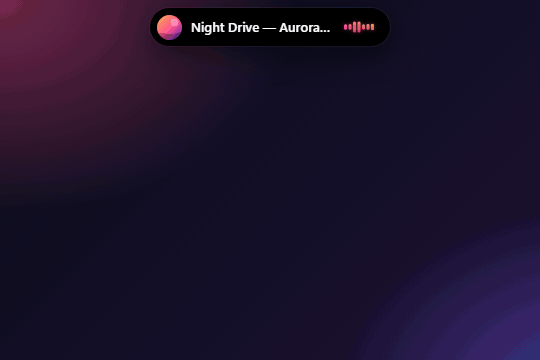
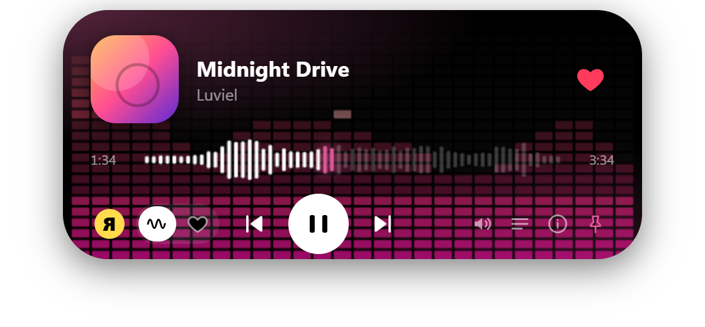
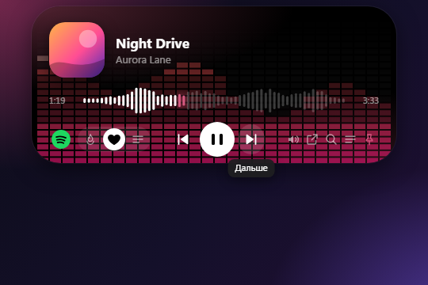
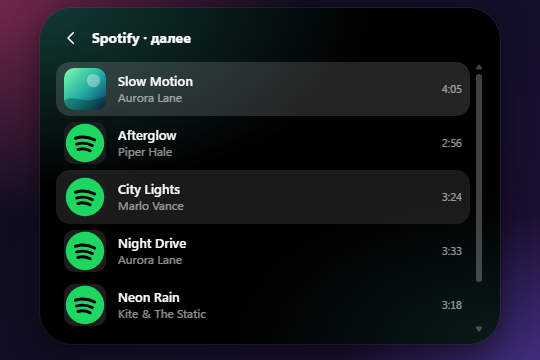

Бесплатный музыкальный Dynamic Island для Windows
Music Island — маленький остров на рабочем столе: показывает, что играет, раскрывается при наведении и управляет Spotify, Яндекс Музыкой, YouTube и SoundCloud. Открытый код, лицензия MIT, Windows 10/11.
Как это выглядит
Настоящий интерфейс острова с демонстрационными треками: наведение, перемотка по волне, смена трека и очередь.

Демо с выдуманными треками, записано с настоящего интерфейса приложения.
Что умеет
Всё перечисленное реализовано в текущем релизе.
Плавающий остров
Поверх окон, раскрывается при наведении, не уходит за экран и встаёт в самый угол. Прозрачные области пропускают клики.
Несколько сервисов в одном месте
Spotify, Яндекс Музыка, SoundCloud, YouTube и любой системный плеер. Переключение с острова или из трея.
Поиск по сервисам
Один запрос ищет в Яндекс Музыке, SoundCloud и YouTube. Одна песня склеивается в одну строку со значками сервисов.
Волновой прогресс
Палочки повторяют форму песни, клик по волне перематывает. Цвета подстраиваются под обложку.
Эквалайзер на 10 полос
Для Яндекс Музыки и SoundCloud: ручная настройка, пресеты и цветная сетка на фоне острова.
Очередь, лайки, медиаклавиши
Список следующих треков, лайки (Яндекс Музыка, SoundCloud), глобальные медиаклавиши, меню в трее, автозапуск с Windows.
Поддерживаемые сервисы
Что доступно, зависит от самого сервиса. В таблице только то, что реально работает в острове.
| Функция | Spotify | Яндекс Музыка | YouTube | SoundCloud | Системный плеер |
|---|---|---|---|---|---|
| Пауза, следующий, предыдущий, перемотка | ✓ | ✓ | ✓ | ✓ | ✓ |
| Трек, обложка и прогресс в острове | ✓ | ✓ | ✓ | ✓ | ✓ |
| Очередь в острове | ✓ | ✓ | ✓ | ✓ | — |
| Громкость | ✓ | ✓ | ✓ | ✓ | — |
| Лайк | — | ✓ | — | ◐ | — |
| Перемешивание | — | ◐ | — | — | — |
| Эквалайзер на 10 полос | — | ✓ | — | ✓ | — |
| Поиск из острова | ◐ | ✓ | ✓ | ✓ | — |
| Вход | Ваш аккаунт Spotify | OAuth-токен | Не нужен | Необязателен (для лайков) | Не нужен |
✓ работает · ◐ частично (Spotify: поиск открывает официальную страницу в панели; Яндекс Музыка: перемешивание только в «Избранном»; SoundCloud: для лайков нужен вход) · — недоступно
Spotify и Яндекс Музыка
Два главных сервиса и то, как они подключаются.
Spotify: официальный веб-плеер
Остров встраивает официальный веб-плеер open.spotify.com в Microsoft Edge WebView2. Вы входите на настоящей странице Spotify (Free или Premium), пароль остаётся у Spotify. Без Web API, Client ID, ключей разработчика, извлечения cookie и блокировки рекламы. Воспроизведением управляют медиа-команды Windows, очередь читается со страницы, громкость — звуковая сессия плеера в Windows. Реклама в Free играет как в обычном браузере.
Яндекс Музыка: «Моя волна» и избранное
«Моя волна» с настройкой по настроению и занятию, избранное, лайки, очередь, эквалайзер и поиск. Вход по OAuth-токену, который хранится на вашем ПК в зашифрованном виде. Используемый API Яндекса неофициальный и может измениться.
У Spotify в острове нет лайка, перемешивания и эквалайзера: встроенный веб-плеер их не отдаёт, поэтому остров их не имитирует.
Галерея
Скриншоты острова. Последние два сделаны с демо-треками.



Скачать Music Island
Бесплатно. Windows 10 или 11, 64 бита. Для Spotify нужен Microsoft Edge WebView2 Runtime (есть в современных Windows).
⬇ Скачать последний установщик
- Скачайте
Music-Island-Setup-*.exeиз последнего релиза. - Запустите и выберите папку.
- Остров появится на экране, значок в трее открывает настройки.
Установщик не имеет цифровой подписи, поэтому Windows SmartScreen может показать «Windows защитила ваш компьютер». Убедитесь, что файл скачан со страницы официального релиза, сверьте его SHA-256 со значением в описании релиза и выберите «Подробнее → Выполнить в любом случае». Не отключайте Защитник Windows. Подробнее: SECURITY.md.
Вопросы и ответы
Music Island бесплатный?
Да. Приложение бесплатное, с открытым кодом под лицензией MIT. В нём нет рекламы и платных функций.
Нужен ли Spotify Premium?
Нет. Остров встраивает официальный веб-плеер Spotify, поэтому работают и Free, и Premium. Реклама в Free играет как в браузере, остров её не блокирует.
Работает ли на Windows 10 и Windows 11?
Да, на обеих 64-битных версиях. Для Spotify нужен Microsoft Edge WebView2 Runtime, он входит в современные Windows.
Почему у Spotify нет лайка и эквалайзера?
Звук играет внутри встроенной страницы Spotify, которая не отдаёт состояние лайка и перемешивания. Остров показывает только те функции, которые может честно выполнить.
Это безопасно? Установщик не подписан.
Исходный код открыт, собственных ключей у приложения нет, вход происходит на официальных страницах сервисов. Установщик не подписан цифровой подписью, поэтому SmartScreen может предупредить. Скачивайте только из официальных релизов и сверяйте SHA-256.
SoundCloud или YouTube не открываются
Если сервис недоступен в вашей стране, включите VPN или прокси в меню трея. Он используется только для SoundCloud и YouTube.
Связан ли проект со Spotify, Яндексом, YouTube или SoundCloud?
Нет, проект независимый. Все торговые марки принадлежат их владельцам.